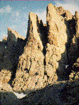

The Petit Grepon is one of Rocky Mountain National Park's most challenging and awesome climbs. Nestled in the middle of the Cathedral Spires, the summit is a mere ten-by-thirty-foot perch.
For those interested in a less intimidating option, we also offer tours up Sharkstooth, a nearby summit with excellent views of the Petit Grepon.
Difficulty Level: Expert
Time: Full day
Physical Stress: Extreme